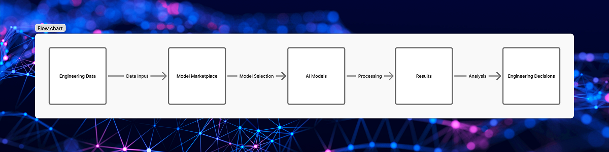
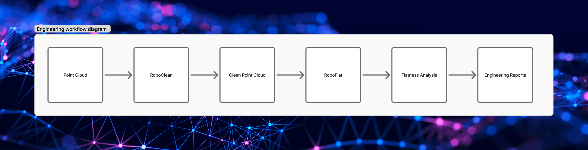
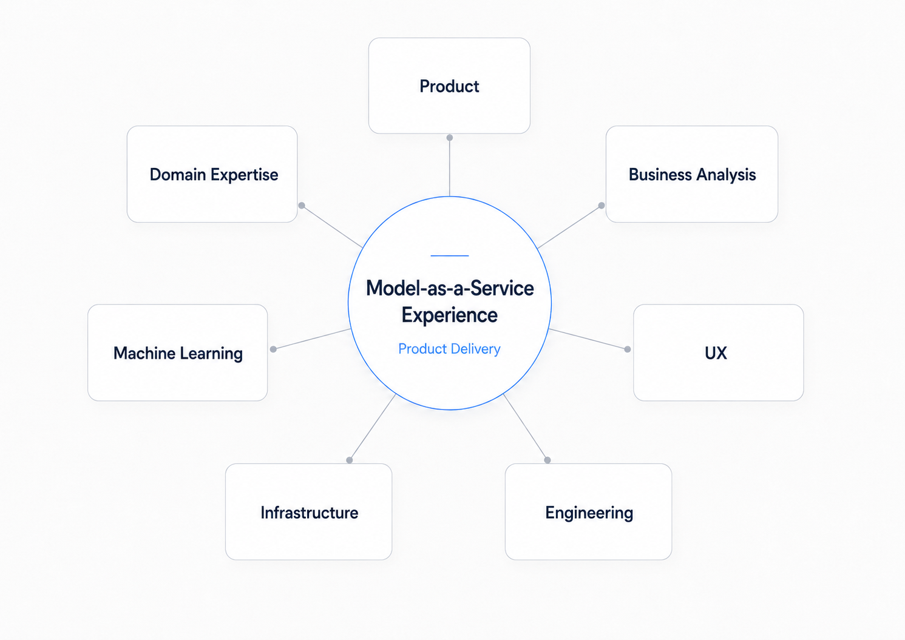
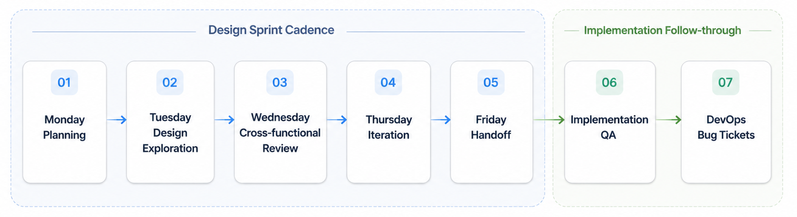

Designing a Scalable AI Model Execution Framework

Evolving the interaction architecture behind BRYX’s Model-as-a-Service platform
When people think about AI products, they often imagine the intelligence behind the model: the algorithms, the training data, or the predictions. But for most users, the real experience of AI happens long before a model begins processing data.
It begins with discovering the right model, understanding what the model expects as input, configuring the correct parameters, and trusting that the system will produce meaningful results.
Those seemingly simple interactions become much more complex as a platform grows beyond a single model.
That was the challenge we faced while building BRYX.
BRYX is a cloud-based Model-as-a-Service platform developed by KCI Technologies that enables engineering professionals to run specialized AI models without managing the underlying infrastructure or machine learning pipelines themselves. Instead of installing desktop software or manually executing complex processing workflows, users can upload engineering datasets, configure model-specific parameters, execute AI-powered analysis, and retrieve results through a web application.
As the platform matured, it evolved from supporting a single flagship model, RoboFlat, into an expanding ecosystem of specialized AI models, including RoboClean and additional computer vision solutions. While each model solved a different engineering problem, they all shared a common interaction pattern: selecting data, configuring parameters, validating inputs, monitoring execution, and reviewing results.
That commonality revealed an opportunity.
Rather than designing every model independently, we could establish a reusable execution framework that would provide a consistent experience regardless of which AI model a user selected. At the same time, the framework needed to remain flexible enough to accommodate models with different parameter sets, validation requirements, and output formats.
This is not the story of redesigning a wizard. It is the story of designing an interaction architecture capable of scaling alongside an evolving AI platform.
The Product Vision

Before discussing interface decisions, it is important to understand what BRYX was trying to accomplish.
The platform was built around a simple but ambitious idea: make advanced engineering AI accessible through a cloud-based marketplace of specialized models.
Each model performs a distinct task within a larger engineering workflow. RoboClean automatically removes noise from point cloud scans. RoboFlat analyzes cleaned point clouds to generate concrete floor flatness measurements. Other models focus on different inspection, analysis, and detection tasks, but they all follow the same fundamental lifecycle:
Select data → Configure the model → Execute analysis → Review results.
From the user’s perspective, the experience should feel consistent regardless of which model they choose. From the product’s perspective, however, each model introduces unique requirements, parameters, validations, and outputs.
The design challenge was not simply creating an attractive workflow for RoboFlat or RoboClean. It was defining a scalable interaction pattern that future models could adopt without requiring users to learn a new experience every time the platform expanded.
That commonality revealed an opportunity.
RoboClean and RoboFlat were especially important because they represented two connected stages in a real engineering workflow. RoboClean prepared point cloud data by removing noise. RoboFlat could then use the cleaned point cloud to perform floor flatness analysis. Technically, these were separate AI models. From the user’s point of view, they were consecutive steps in a single task.
That relationship became one of the most important design opportunities in the project.

My Role

I served as the sole UX designer for BRYX and was responsible for the end-to-end user experience across the platform.
Unlike many projects where designers inherit an existing product, I designed BRYX’s original model execution workflow during the platform’s earliest development. As new AI capabilities were introduced over time, I revisited my own work to evolve the experience alongside the product’s growing complexity.
My responsibilities included leading interaction and workflow design for new platform capabilities, translating Azure DevOps requirements into user flows and high-fidelity interfaces, collaborating with product, business analysis, machine learning, and engineering during weekly design reviews, moderating usability studies with engineering professionals, and conducting post-implementation design QA.
The core product team included Catherine, the Product Manager and my direct manager, who owned the product roadmap and much of the product copywriting; Rhonda, the Business Analyst and Scrum Master, who managed Azure DevOps tickets, sprint priorities, backlog refinement, and requirement documentation; James, the RoboFlat domain expert; Karl, the lead machine learning engineer responsible for training the models; Grace, the full-stack engineer responsible for frontend UI implementation and backend development; Brendan, who managed data pipeline and infrastructure work; and Jeanne, the Director of Technology and Innovation and the leading stakeholder for the BRYX platform.
My design decisions were validated or challenged by this group through recurring reviews and implementation feedback. I worked primarily from written requirements, then collaborated with Rhonda and Catherine to better understand the business goals, user needs, technical constraints, and expected behavior behind each ticket.
Our team followed a repeatable sprint rhythm:
Each Monday, I met with Catherine and Rhonda to review priorities for the week and discuss new requirements.
By Tuesday, I typically created an initial design draft.
On Wednesdays, I facilitated design reviews with Catherine, Rhonda, Grace, and Brendan to validate the direction, gather feedback, and expose technical constraints early.
After incorporating feedback, I posted revisions to our design channel in Microsoft Teams for additional review.
Every other Friday, I conducted a one-on-one handoff meeting with Grace to walk through the final designs, interactions, edge cases, and implementation expectations.
After implementation, I reviewed the work in the test environment and documented any issues where the implementation did not match the intended design. Those notes were converted into Azure DevOps bug tickets so they could be prioritized and addressed through the same product delivery process.
This continuous loop allowed the platform to evolve incrementally rather than through large, disconnected redesigns.

When One Workflow Became Many
The first version of BRYX’s Model Run workflow was designed around a single AI model: RoboFlat.
At the time, the interaction model was intentionally straightforward. Users selected a dataset, configured model-specific parameters, reviewed their selections, and submitted the model for processing. The workflow reflected the needs of a single product and the assumption that users would complete the process on a desktop workstation.
As BRYX evolved, that assumption began to change.
New AI models introduced different execution requirements. The Model Marketplace expanded. Users accumulated larger collections of datasets. The platform gained subscriptions, credits, storage limits, usage visibility, and model-specific capabilities. At the same time, we began validating the experience with engineering users who approached these workflows from different levels of familiarity.
The original workflow was not broken.
It simply was not designed for the platform BRYX was becoming.
One realization became increasingly clear throughout our design reviews:
We were not redesigning a wizard. We were defining the interaction pattern that every future AI model would inherit.
That realization changed how I evaluated every design decision.
Every change now had to answer a broader question:
Would this still work if BRYX supported ten models instead of one?
Consolidating Workflow Navigation
One of the first friction points I identified was not tied to a specific screen. It was tied to the workflow itself.
In the original implementation, the controls responsible for moving users through the model execution process were scattered across the interface.
The Back action appeared near the top of the page.
The Add Dataset call-to-action occupied its own section.
The stepper communicated progress but did not house the primary navigation controls.
The Next button lived beneath the page content, which meant users sometimes had to scroll before they could proceed on longer screens.
Individually, none of these decisions were problematic.
Collectively, they fragmented the workflow.
Users had to scan different areas of the interface to understand how to move forward, move backward, add data, or orient themselves within the run process. This mattered because model execution was the core interaction pattern of the platform. The workflow needed to feel predictable, not assembled from disconnected controls.
The first solution I explored was relatively direct: make the Previous and Next controls fixed or sticky along the bottom edge of the interface.
On paper, this solved the discoverability problem.
In practice, it introduced a new one.
The page already had a sticky header containing model information, stepper progress, and contextual details about the model run. Adding a second sticky control bar at the bottom would compress the usable workspace between two persistent UI regions. Parameter-heavy forms and large data tables would have less room to breathe, especially on laptops and smaller displays.
The solution addressed one usability issue while creating another.
Rather than forcing the sticky bottom bar to work, I stepped back and reframed the problem.
The issue was not simply where the Next button lived.
The issue was that workflow navigation itself had become fragmented.
Instead of introducing another persistent UI element, I redesigned the navigation architecture.
The Previous and Next controls were moved into the stepper region itself, visually connecting progression controls with workflow progress. This made the controls more discoverable and strengthened the relationship between where users were in the workflow and how they could move through it.
The interface became simpler, not because it contained fewer controls, but because related controls now lived together.
Design principle:
Design the workflow as a single system, not as a collection of individual controls.
Recovering Vertical Space
Consolidating navigation solved only part of the problem.
The larger issue was vertical density.
As new platform capabilities were introduced, additional interface elements accumulated within the page header: model descriptions, version information, available credits, trial status, storage indicators, navigation controls, and primary actions.
Viewed independently, each element served a legitimate purpose.
Together, they consumed an increasing percentage of the viewport before users reached the content they actually came to work with.
For an application centered around large engineering datasets and parameter configuration, every additional row in the header reduced the space available for the user’s primary task.
Instead of shrinking individual components, I reconsidered the hierarchy itself.
The Add Dataset action moved inline with the model name and description section near the top of the UI, eliminating an entire stacked section.
The Go Back link moved into that same model name and description region, removing another stacked row.
Metadata was reorganized into a more compact presentation so important information could remain visible without dominating the page.
None of these changes were dramatic in isolation.
Together, they reclaimed valuable vertical space while preserving the information users needed to make decisions.
More importantly, they shifted visual emphasis away from interface chrome and back toward the workflow itself.
Design principle:
The most valuable space in a workflow is the space where users perform work, not the space occupied by the interface.
Responsive Design as Information Architecture
The responsive layouts introduced a second design question:
How much information does someone actually need while progressing through a workflow on a smaller screen?
Traditional responsive design often focuses on rearranging interface elements to fit narrower viewports.
I approached the problem by reconsidering the user’s priorities.
On a desktop display, users benefit from seeing the entire workflow at once. Multiple steps provide context and help users understand where they are in the overall process.
On a tablet or smaller laptop, preserving that overview is still valuable, but not at the expense of legibility or usable workspace.
On mobile, trying to preserve the full desktop stepper would make every element smaller and less useful. Instead, the interface needed to prioritize the current step, the user’s immediate next action, and enough progress context to keep the workflow understandable.
The mobile experience did not try to preserve the desktop layout.
It preserved the user’s understanding.
That distinction became central to the responsive strategy. Rather than forcing every screen size to display the same information in the same way, each layout prioritized the information most relevant to that context.
The interaction remained familiar.
The presentation adapted intentionally.
Responsive interfaces should not merely adapt to available space. They should adapt to the way people interact within that space.
Design principle:
Responsive design is not about preserving layouts. It is about preserving understanding.
Connecting AI Models: Designing Workflow Continuity
When RoboFlat was originally released, it existed as a standalone capability.
Users supplied their own datasets, configured model parameters, and generated flatness reports. The workflow was self-contained because the platform contained only a single AI model.
That changed with the introduction of RoboClean.
RoboClean solved a complementary problem by automatically removing noise from raw point cloud scans before analysis. In practice, this meant one model naturally produced the ideal input for another.
Technically, the two models were independent.
From the user’s perspective, however, they represented consecutive steps within a single engineering workflow.
The question became:
Should users experience these as two separate products, or as one continuous workflow?
That distinction shaped every design decision that followed.
Designing Around the User’s Mental Model
From an engineering perspective, connecting RoboClean and RoboFlat could have been treated as a technical integration.
From a UX perspective, it was fundamentally a workflow problem.
Before the integration, users would have needed to wait for RoboClean to finish processing, download the cleaned output files, navigate to dataset management, upload those files as a new dataset, return to RoboFlat, select the newly created dataset, and then continue configuring the analysis.
Every step was logical.
Every step was also manual.
The platform already understood the relationship between these artifacts. There was no reason the user should have to reconstruct that relationship themselves.
Instead, I designed a workflow that treated RoboClean outputs as a first-class input source within RoboFlat.
Rather than leaving the current task, users could select an existing RoboClean run and continue moving forward. Behind the scenes, BRYX created the necessary dataset automatically, preserving the flexibility of the underlying data model while eliminating unnecessary work from the user’s perspective.
The experience became less about managing files and more about completing engineering tasks.
Research Challenged Our Assumptions
One of the most valuable parts of this project was not confirming that the design worked.
It was discovering where users expected the product to behave differently.
During usability testing, participants interpreted the interface through the lens of workflows they already knew. When asked how they would use RoboClean output within RoboFlat, one participant initially described going to Results, downloading the dataset, adding it as a dataset, and then continuing from there. They also stated that from the screen alone, they could not tell whether there was a way to use RoboClean results directly as a dataset input for a new RoboFlat run.
From their perspective, that expectation made sense.
It matched years of experience moving files between desktop applications and manual processing workflows.
The challenge was not convincing users that the integrated workflow was technically correct.
The challenge was helping them recognize that BRYX had already automated the work they expected to perform themselves.
This insight shifted the design priorities.
Rather than hiding the automation behind the interface, I looked for opportunities to make the relationship between RoboClean and RoboFlat more explicit through navigation, empty states, contextual messaging, and information architecture.
The goal was not simply to remove steps.
It was to help users trust that those steps no longer needed to exist.
Designing for Confidence
One design principle guided the integration work:
Automation should reduce effort, not reduce understanding.
Although BRYX automatically generated a new dataset from the selected RoboClean output, the interface still needed to explain what was happening.
Users needed to understand that a new dataset would be created.
They needed to know how it affected their storage allocation.
They needed visibility into which files were being used for analysis.
Instead of hiding the process entirely, the design exposed just enough of the underlying system to maintain user confidence while removing unnecessary manual interaction.
That balance became increasingly important as additional AI capabilities were introduced throughout the platform.
The best workflow is not simply the one with the fewest steps. It is the one that eliminates unnecessary work while making users feel confident about what is happening on their behalf.
Iterating Beyond the Happy Path
The integration also revealed smaller opportunities for refinement.
Usability sessions surfaced questions about parameter terminology, output naming conventions, discoverability of contextual help, and how users understood generated files. One participant described the RoboClean workflow as intuitive and said that if cleaning could be completed in four steps, it would save significant time. The same session also surfaced the need for better explanatory copy around low, medium, and high cleaning filters, output options, parameter help, and how naming would appear in resulting reports.
These were not problems with the overall structure.
They were moments where the interface needed to provide more confidence.
Professional users rarely struggle because they lack technical expertise. They struggle when software leaves too much open to interpretation.
Designing for experts often means reducing ambiguity, not reducing complexity.
That insight informed refinements throughout the workflow, including contextual help, parameter descriptions, tooltip behavior, output naming, file validation messaging, and empty states.
Together, they made the experience feel more predictable.
Inside the Product Team
Designing the BRYX platform was not a sequence of isolated design assignments.
It was a continuous conversation between product strategy, engineering constraints, machine learning capabilities, and the needs of engineering professionals who would ultimately rely on the platform.
Although I served as the sole UX designer, every significant design decision emerged through collaboration.
Our two-week sprint cadence created a predictable rhythm that allowed ideas to mature through repeated feedback rather than relying on a single design review.
Each sprint began with planning sessions alongside Catherine and Rhonda. Together, we reviewed upcoming priorities, clarified Azure DevOps requirements, discussed business objectives, and identified technical dependencies that could influence the user experience.
Those conversations rarely focused on screens first.
They focused on questions like:
What problem are we solving?
What assumptions are we making?
What constraints already exist?
How should this capability fit into the broader platform?
By the time I opened Figma, the objective was not simply to create an interface. It was to translate those conversations into a coherent user experience.
From Requirements to Conversation
I typically spent the first half of each sprint exploring solutions independently before presenting an initial concept to the broader product team.
Rather than waiting until a design felt complete, I intentionally shared early directions while they were still flexible.
Every Wednesday, those concepts became the centerpiece of a collaborative design review involving product, engineering, infrastructure, and machine learning stakeholders.
Each discipline evaluated the work through a different lens.
Product focused on user value and roadmap alignment.
Engineering evaluated implementation complexity and frontend architecture.
Infrastructure raised considerations around processing pipelines and platform capabilities.
Domain experts challenged terminology, workflows, and assumptions based on real engineering practices.
The goal was not to defend my designs.
It was to expose them to enough expertise that weak ideas could fail early.
Some proposals survived those conversations largely unchanged.
Others evolved significantly or disappeared entirely.
The sticky navigation concept for the model run workflow is one example. While it initially solved the visibility issue around Previous and Next controls, collaborative review surfaced new concerns around viewport compression and content density. Rather than forcing the idea forward, those discussions led to a better solution: reconsidering the broader navigation architecture.
Looking back, those conversations consistently produced better outcomes than any individual solution I could have designed alone.
Designing Alongside Machine Learning
One aspect of BRYX that made the project especially valuable was the diversity of expertise involved.
Unlike many enterprise applications, our product was not simply exposing business data through dashboards and forms.
Every workflow represented the intersection of several highly specialized disciplines.
Machine learning engineers defined what each model required.
Domain experts explained how surveyors and engineers actually performed their work.
Frontend engineering translated interaction concepts into reusable components.
Infrastructure teams ensured those interactions aligned with long-running processing pipelines and cloud architecture.
My role was to connect those perspectives into an experience that felt coherent to the user.
In many cases, that meant translating technical capability into understandable interaction patterns.
In others, it meant challenging assumptions that made sense from an engineering perspective but introduced unnecessary friction for users.
The most successful designs rarely originated from a single discipline.
They emerged where those disciplines overlapped.
Ownership Does Not End at Handoff
My involvement did not end once designs were handed off to engineering.
Following implementation, I reviewed completed features within our test environment to ensure the experience matched the intended design, not just visually but behaviorally.
I reviewed spacing, hierarchy, responsive behavior, interaction states, layout consistency, and workflow logic.
When discrepancies appeared, I converted implementation findings into Azure DevOps bug tickets so they could be prioritized and addressed through the same sprint process as any other product work.
This closed an important feedback loop.
Design was not treated as a document handed to engineering.
It remained an active part of the product until the experience worked as intended in the test environment and was ready for production.
For me, shipping a design has never meant sharing a Figma file.
It means ensuring the experience users ultimately receive reflects the intent behind every design decision.
Design principle:
Design is not a phase in product development. It is a continuous conversation that continues until users experience the product.
Designing Through Validation
By the time RoboClean integration entered usability testing, the interface had already gone through multiple design reviews, engineering discussions, and implementation refinements.
The goal of research was no longer simply to answer whether users could complete the workflow.
The more interesting question was whether they understood why the workflow behaved the way it did.
That distinction mattered because BRYX was not simply digitizing an existing engineering process.
It was introducing new ways of working.
The product automated tasks that many users had historically performed themselves, and automation only creates value when users understand and trust what the system is doing on their behalf.
Rather than evaluating isolated screens, I structured usability sessions around realistic engineering scenarios that encouraged participants to think aloud while completing model runs.
Those conversations revealed far more than usability issues.
They revealed expectations.
Observing Mental Models
One recurring pattern emerged almost immediately.
Participants interpreted the interface through the workflows they already knew.
When asked how they would use RoboClean output within RoboFlat, users frequently described downloading processed files, uploading them as new datasets, and manually recreating relationships that the platform was already capable of managing automatically. In one session, a participant explicitly said they did not know from the screen whether the results could be used directly as a dataset input for a new run.
From a technical perspective, those extra steps were unnecessary.
From the user’s perspective, they were completely reasonable.
The interface had not yet fully communicated that BRYX had assumed responsibility for those tasks.
Rather than viewing this as user error, I viewed it as a design opportunity.
The problem was not that users misunderstood the technology.
That realization shifted subsequent iterations away from simply adding functionality and toward making system behavior more transparent.
Small Details Shape Confidence
Not every usability finding resulted in a structural redesign.
Many of the most meaningful improvements were small. Participants wanted more confidence when choosing parameter values.
They questioned dataset naming conventions.
They overlooked contextual help because interactive affordances were too subtle.
They suggested that previews or clearer explanations could help them understand how naming and model information would appear in downstream outputs and reports.
Individually, none of these observations justified redesigning an entire workflow.
Collectively, they highlighted an important truth:
Professional software does not become easier to use by hiding complexity. It becomes easier to use by making complexity understandable.
Those insights informed refinements across tooltip behavior, modal help, parameter descriptions, empty states, labels, validation messaging, and naming conventions.
The interface did not need to become simpler in a superficial way.
It needed to become clearer.
Validation Beyond Research
Usability testing represented only one source of validation.
Implementation reviews often uncovered equally valuable insights.
After engineering completed a feature, I reviewed the implementation within our testing environment to ensure interactions, spacing, responsiveness, and visual hierarchy aligned with the design intent.
Whenever discrepancies appeared, they became actionable DevOps work items rather than informal feedback.
This created a continuous refinement cycle where research informed design, design informed development, and implementation generated new opportunities for improvement.
Rather than treating validation as a single milestone, the product evolved through many smaller feedback loops.
Looking back, that iterative process shaped the quality of the experience far more than any single redesign.
Design principle:
Great UX is not validated when users complete a task. It is validated when users understand the system well enough to predict what it will do next.
Outcomes
The outcome of this work was not a single redesigned screen.
It was a more scalable model execution framework for BRYX.
The redesigned workflow consolidated navigation, reduced header density, improved visibility of progression controls, and created a stepper architecture that could adapt across desktop, tablet, and mobile layouts.
It also established a reusable interaction pattern that could support multiple AI models with different step counts, parameters, validation requirements, and output types.
For RoboClean and RoboFlat specifically, the integration reduced unnecessary manual work by allowing users to select RoboClean outputs directly inside the RoboFlat workflow rather than downloading, re-uploading, and manually converting files into datasets.
The resulting experience better aligned with BRYX’s broader product vision: helping engineering professionals use specialized AI models without needing to manage the technical complexity behind them.
The work also strengthened the team’s product development process. Design reviews, usability testing, handoff rituals, implementation QA, and DevOps bug tracking became part of a continuous loop that allowed the experience to improve across multiple sprints.
Key outcomes included:
- A reusable model execution framework that could scale beyond RoboFlat.
- A more responsive stepper component that adapted across viewport sizes.
- A clearer relationship between workflow progress and navigation controls.
- Reduced vertical density in the model run header.
- A more discoverable RoboClean-to-RoboFlat integration.
- Less manual file handling between connected AI models.
- Stronger contextual guidance around parameters, outputs, and dataset creation.
- A repeatable product design process connecting requirements, design, development, testing, and QA.
Reflection: Designing AI Products as Systems
When I first designed BRYX, I did not have the full context of all of the various models that would be later developed and added to the platform.
As the platform evolved, I needed to adapt the model run framework to a variety of data models that included vision and sound analysis.
Every decision about navigation, information hierarchy, responsiveness, dataset management, and workflow continuity would eventually influence every model introduced to the platform.
The project fundamentally changed how I think about product design.
Not because it introduced new design tools, but because it reinforced that successful platforms are built on reusable interaction patterns rather than isolated interfaces.
Design Systems Extend Beyond Visual Components
We often think of design systems as buttons, typography, spacing, tokens, and components.
This project reminded me that workflows can be systematized as well.
By establishing a consistent model execution framework, each new AI capability could feel immediately familiar while remaining flexible enough to accommodate different technical requirements.
Consistency was not created through identical screens.
It was created through shared interaction patterns.
Responsive Design Is an Information Architecture Problem
Every screen size changes how people consume information.
Designing for multiple devices required reconsidering hierarchy, interaction, and attention, not simply shrinking components to fit smaller displays.
The goal was not to preserve the desktop UI at every breakpoint.
The goal was to preserve the user's understanding.
Automation Should Reduce Effort, Not Understanding
The best automation often goes unnoticed, but it should not become invisible in ways that confuse users.
The challenge is ensuring users still understand enough of the underlying process to trust the outcome.
Whenever automation removed manual work, the interface needed to replace that effort with clarity.
Consistency was not created through identical screens.
Confidence matters as much as efficiency.
Product Design Is Translation
Throughout the project, I found myself translating continuously.
Business goals became workflows.
Machine learning requirements became interaction patterns.
Domain expertise became terminology, validation logic, and user guidance.
The most valuable contribution was not simply creating interfaces.
It was helping different disciplines arrive at a shared understanding of the product.
Platforms Are Never Finished
Perhaps the biggest lesson BRYX taught me is that platforms do not reach a final design.
They evolve.
Each new capability changes the context for every capability that came before it.
Designing for that reality means building systems flexible enough to evolve without forcing users to relearn the product every time it grows.
Closing
Looking back, I no longer see this project as the design of RoboFlat, RoboClean, or even one isolated BRYX workflow.
I see it as the process of defining an interaction architecture for an emerging AI platform.
What began as the workflow for a single engineering model gradually evolved into a reusable execution framework supporting multiple AI capabilities, responsive experiences, continuous usability refinement, and cross-functional collaboration.
The interfaces changed.
The components evolved.
The workflows became more connected.
But the most meaningful outcome was not any individual screen.
It was establishing a foundation that allowed the platform to continue growing without sacrificing usability, consistency, or user confidence.